独具特色的市场力作
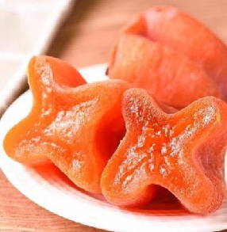
柿子果胶
精选优质柿子提取的天然果胶，富含营养
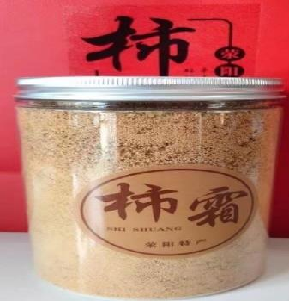
柿霜
古法晾晒自然结晶的天然精华
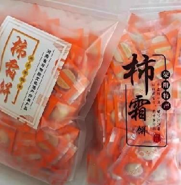
柿霜糖
经霜成晶的天然糖霜凝聚柿子，本味营养
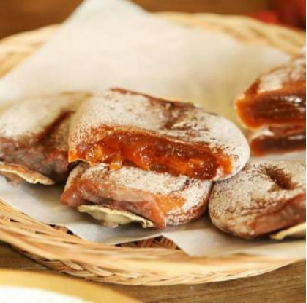
柿霜饼
传统工艺制作的柿霜饼，口感独特
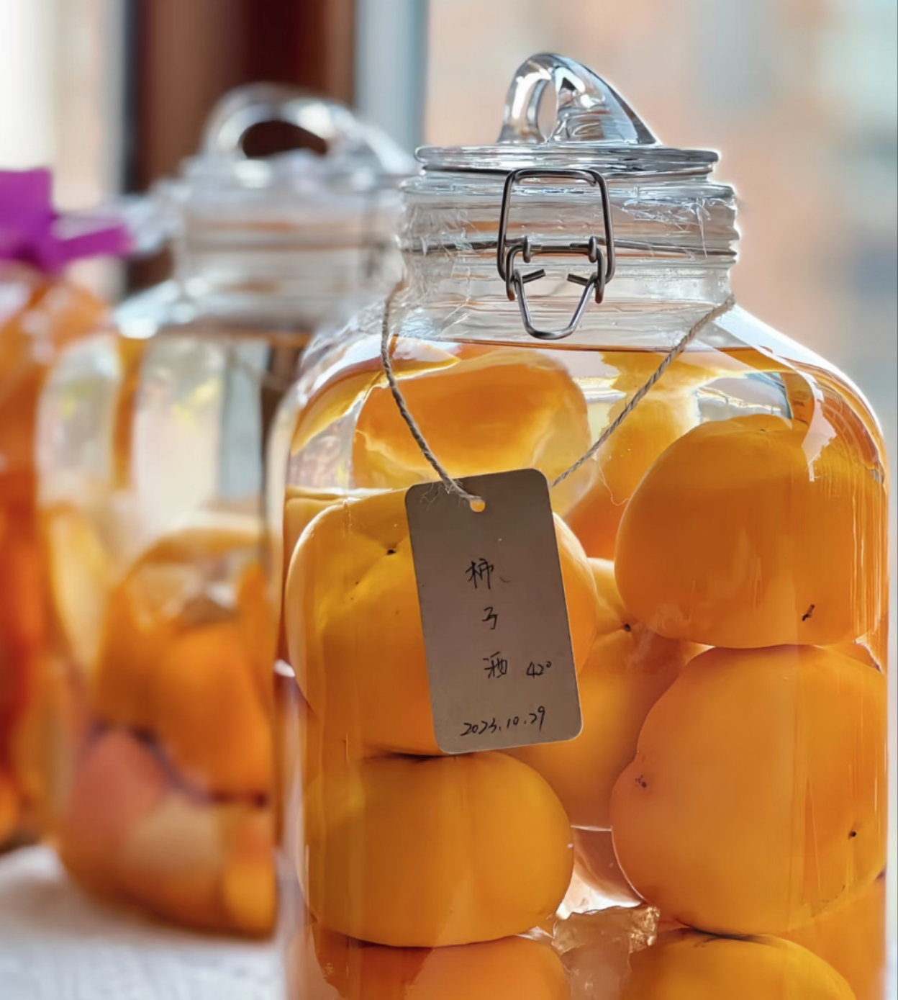
柿子酒
采用古法酿造的柿子酒，醇香浓郁
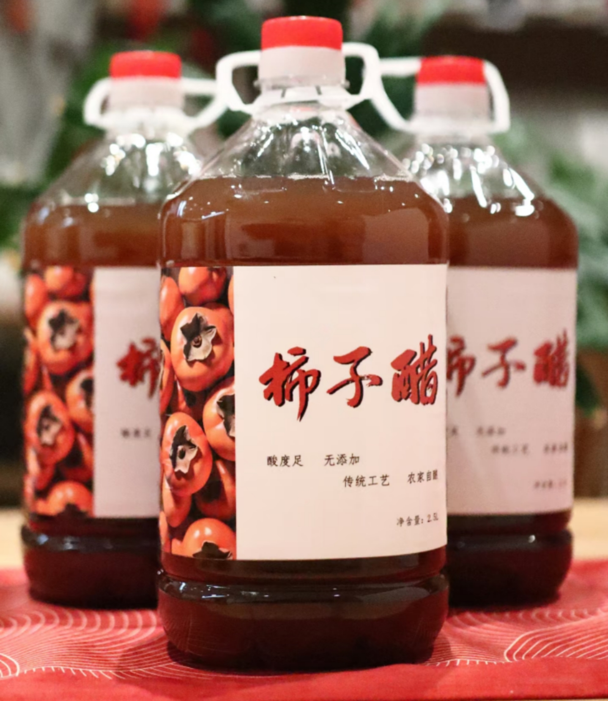
柿子醋
天然发酵的柿子醋，健康调味品
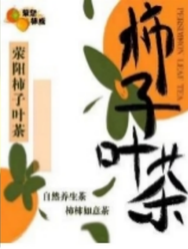
柿子茶
严选成熟鲜柿精制的醇厚茶汤，满溢果香
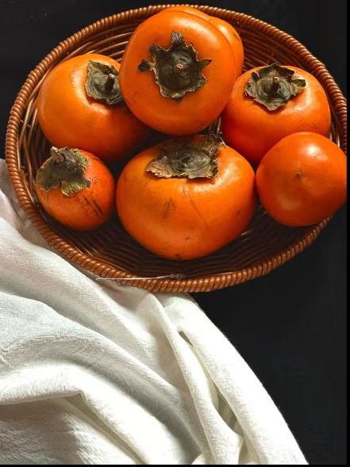
鲜柿
新鲜采摘的优质柿子，清热润肺，生津止渴
柿子与中医药的千年智慧
柿霜
形成过程：柿饼表面自然析出的白色结晶
- 治疗小儿口腔溃疡
- 缓解老年复发性口疮
- 辅助减肥，调节代谢
- 传统用于咽喉肿痛、口舌生疮
现代提取：采用低温结晶技术保留活性成分
柿蒂
药用部位：柿的干燥宿萼
- 降逆止呕，治疗呃逆特效
- 《滇南本草》记载："治气膈反胃"
- 现代用于妊娠呕吐辅助治疗
- 含齐墩果酸等活性成分
使用方法：3-9g煎汤或研末服
柿叶
采收时节：霜降前后采摘为佳
- 柿叶茶辅助降压降脂
- 治疗慢性气管炎
- 改善胃粘膜出血症状
- 含黄酮类物质，抗氧化效果显著
日本研究：用于美容淡斑有特效
柿花
药用特点：五月采收的雄花
- 降逆和胃，治疗呕吐反酸
- 解毒收敛，外用治疮疡
- 《分类草药性》载："治痘疮破烂"
- 民间用于解酒毒
现代开发：首创柿花养生茶系列
※ 以上内容参考《中国药典》《本草纲目》等典籍，具体应用请遵医嘱
周边
Surrounding
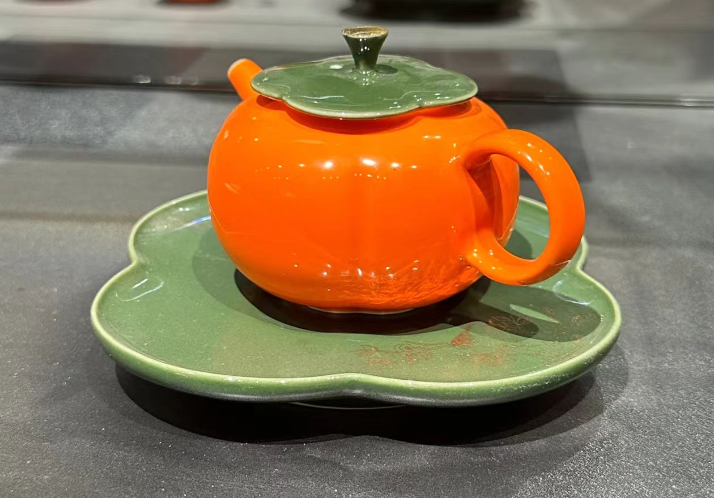
柿子茶壶
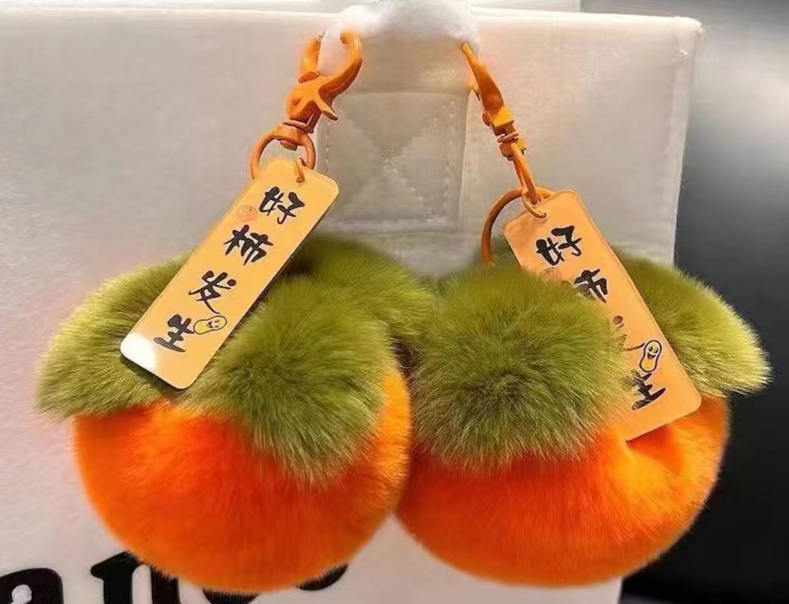
柿子挂坠
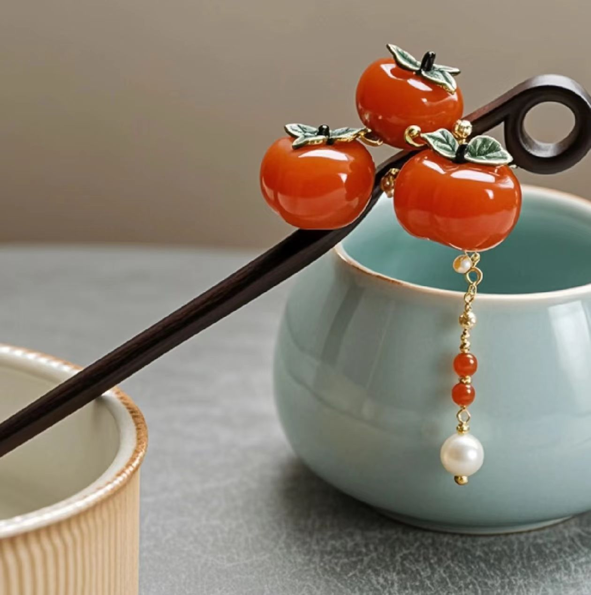
柿子发簪
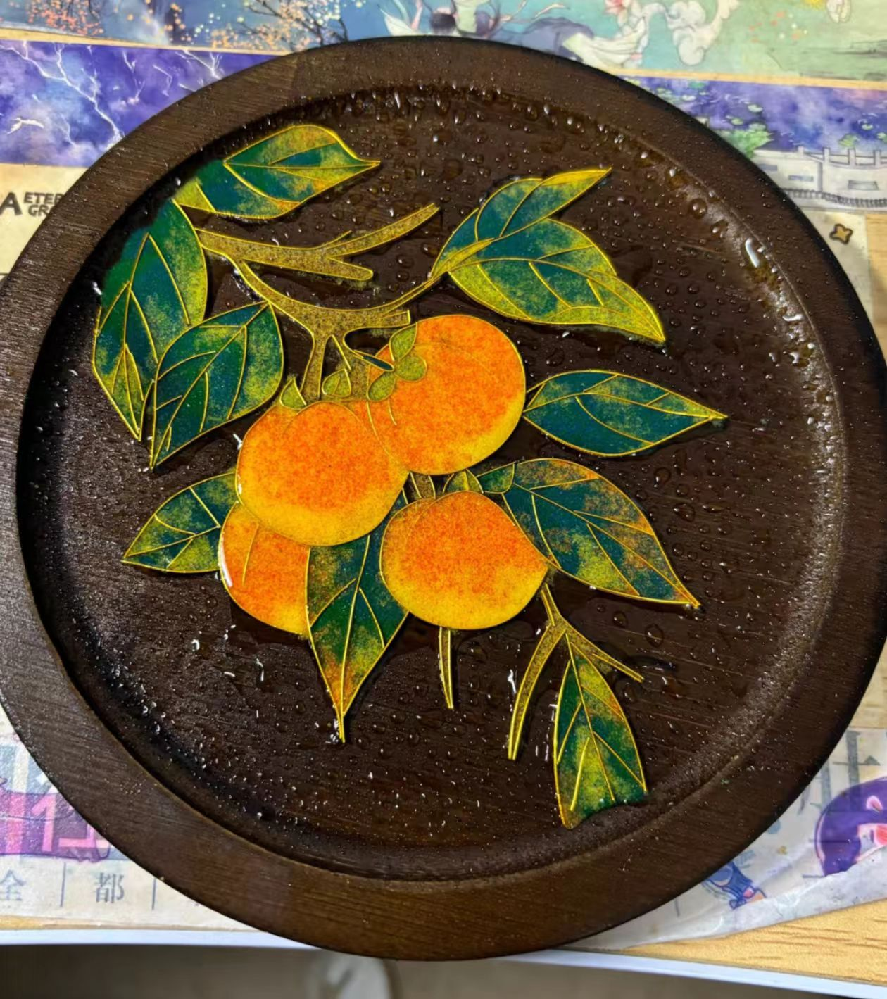
掐丝珐琅柿子杯垫
包装
Packaging